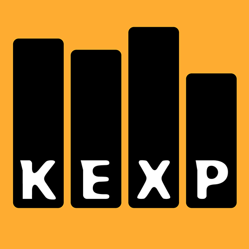

In this playlist:
Performances


KEXP-FM (90.3 FM) — радиостанция основанная в Сиэтле, штат Вашингтон. Специализируется на альтернативном и инди-роке. Лицензия на вещание принадлежит Вашингтонскому университету, который работает совместно с Полом Алленом и Experience Music Project. Прежнее название радиостанции — KCMU (использовалось в 1972—2001 годах).